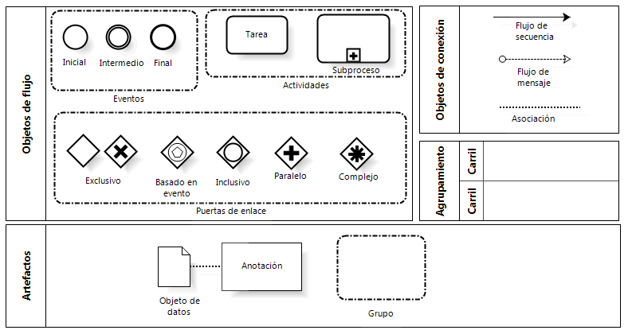

6. Diagramas Complementarios
2. Simbología de Eventos BPMN
Eventos
Símbolo de evento de inicio: Indica el primer paso de un proceso.
Símbolo de evento intermedio: Representa cualquier evento que ocurre entre un evento de inicio y uno de finalización.
Símbolo de evento de finalización: Indica el último paso en un proceso.
Actividades
Símbolo de tarea: El nivel más básico de una actividad y no puede subdividirse en más partes. Por ejemplo, un proceso de rutina matutina podría involucrar la tarea de encender tu computadora.
Símbolo de subproceso: Es un grupo de tareas que se integran particularmente bien. Hay dos vistas diferentes de los subprocesos. Una es la vista contraída, que tiene un signo "más" expandible para mostrar más detalles. La otra es la vista de subproceso ampliada, que es lo suficientemente grande como para contener todas las tareas que describen el subproceso de forma completa
Objetos de conexión
Símbolo de flujo de secuencia: Conecta los objetos de flujo en un orden secuencial adecuado.
Símbolo de flujo de mensaje: Representa mensajes de un participante del proceso a otro.
Símbolo de asociación: Muestra relaciones entre los artefactos y los objetos de flujo.
Puertas de Enlace
Símbolo de exclusivo: Evalúa el estado del proceso de negocio y, según esa condición, separa el flujo en una o más rutas que se excluyen mutuamente. Por ejemplo, se escribirá un informe si el supervisor otorga la aprobación; no se generará un informe si el supervisor no concede la aprobación.
Símbolo basado en eventos: Una puerta de enlace basada en eventos es similar a una puerta de enlace exclusiva, ya que ambas involucran una ruta en el flujo. Sin embargo, en el caso de una puerta de enlace basada en eventos, evalúas qué evento ha ocurrido, no qué condición se está cumpliendo. Por ejemplo, puedes esperar para enviar un correo electrónico recién cuando el director ejecutivo haya llegado a la oficina. Si el director ejecutivo no llega, el correo electrónico seguirá sin ser enviado.
Símbolo de inclusiva: Separa el flujo de procesos en uno o más flujos. Por ejemplo, una puerta de enlace inclusiva podría involucrar acciones empresariales llevadas a cabo en función de los resultados de una encuesta. Se puede activar un proceso si el consumidor está satisfecho con el producto A. Se activa otro flujo si el consumidor indica que está satisfecho con el producto B y se activa un tercer proceso si no está satisfecho con el producto A.
Símbolo de paralela: Se distingue de otras puertas de enlace porque no depende de condiciones o eventos. En cambio, las puertas de enlace paralelas se emplean para representar dos tareas simultáneas en un flujo de negocio. Un ejemplo es un departamento de marketing que genera nuevos clientes potenciales y contacta a los clientes existentes al mismo tiempo.
Símbolo de compleja: Estas puertas de enlace solo se usan para los flujos más complejos en un proceso de negocio. Un caso de uso ideal para una puerta de enlace compleja se da cuando necesitas puertas de enlace múltiples para describir el flujo de negocio.
Carriles
Los carriles se usan para organizar los aspectos de un proceso en un diagrama BPMN. Agrupan visualmente los objetos en carriles y cada aspecto del proceso se agrega a un carril separado. Estos elementos se pueden disponer de forma horizontal o vertical. Los carriles no solo organizan las actividades en categorías separadas, sino que también pueden identificar demoras e ineficiencias, y pueden indicar cuáles son los trabajadores responsables de cada paso de un proceso.
Artefactos
Los artefactos representan información relevante al modelo, pero no a los elementos individuales dentro del proceso. Los tres tipos de artefactos son anotaciones, grupos y objetos de datos que se pueden usar en un diagrama BPMN. Los tres se usan para aumentar y describir un proceso de BPMN.
Las anotaciones permiten al modelador describir las partes del flujo adicionales del modelo o notación.
Los grupos organizan tareas o procesos que tienen importancia en el proceso global.
Los objetos de datos representan los datos ubicados en el proceso, los datos resultantes del proceso, los datos que deben recopilarse o los datos que deben almacenarse.
Obra publicada con Licencia Creative Commons Reconocimiento Compartir igual 4.0